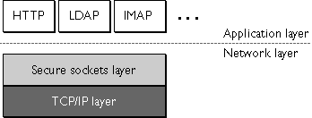
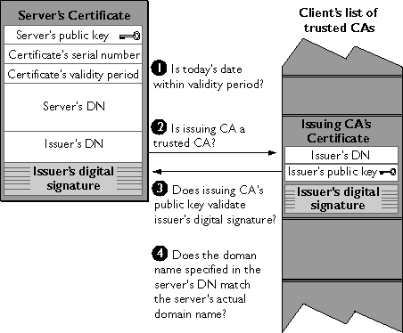

This document introduces the Secure Sockets Layer (SSL) protocol. Originally developed by Netscape, SSL has been universally accepted on the World Wide Web for authenticated and encrypted communication between clients and servers.
The SSL Protocol
Ciphers Used with SSL
The SSL Handshake
The new Internet Engineering Task Force (IETF) standard called Transport Layer Security (TLS) is based on SSL. This was recently published as an IETF Internet-Draft, The TLS Protocol Version 1.0. Netscape products will fully support TLS.
This document is primarily intended for administrators of Netscape server products, but the information it contains may also be useful for developers of applications that support SSL. The document assumes that you are familiar with the basic concepts of public-key cryptography, as summarized in the companion document Introduction to Public-Key Cryptography.
The Transmission Control Protocol/Internet Protocol (TCP/IP) governs the transport and routing of data over the Internet. Other protocols, such as the HyperText Transport Protocol (HTTP), Lightweight Directory Access Protocol (LDAP), or Internet Messaging Access Protocol (IMAP), run "on top of" TCP/IP in the sense that they all use TCP/IP to support typical application tasks such as displaying web pages or running email servers.
Figure 1 SSL runs above TCP/IP and below high-level application protocols

The SSL protocol runs above TCP/IP and below higher-level protocols such as HTTP or IMAP. It uses TCP/IP on behalf of the higher-level protocols, and in the process allows an SSL-enabled server to authenticate itself to an SSL-enabled client, allows the client to authenticate itself to the server, and allows both machines to establish an encrypted connection.
These capabilities address fundamental concerns about communication over the Internet and other TCP/IP networks:
The SSL protocol includes two sub-protocols: the SSL record protocol and the SSL handshake protocol. The SSL record protocol defines the format used to transmit data. The SSL handshake protocol involves using the SSL record protocol to exchange a series of messages between an SSL-enabled server and an SSL-enabled client when they first establish an SSL connection. This exchange of messages is designed to facilitate the following actions:
For more information about the handshake process, see The SSL Handshake.
Cipher Suites with RSA Key Exchange
FORTEZZA Cipher Suites
The SSL protocol supports the use of a variety of different cryptographic algorithms, or ciphers, for use in operations such as authenticating the server and client to each other, transmitting certificates, and establishing session keys. Clients and servers may support different cipher suites, or sets of ciphers, depending on factors such as the version of SSL they support, company policies regarding acceptable encryption strength, and government restrictions on export of SSL-enabled software. Among its other functions, the SSL handshake protocol determines how the server and client negotiate which cipher suites they will use to authenticate each other, to transmit certificates, and to establish session keys.
The cipher suite descriptions that follow refer to these algorithms:
Key-exchange algorithms like KEA and RSA key exchange govern the way in which the server and client determine the symmetric keys they will both use during an SSL session. The most commonly used SSL cipher suites use RSA key exchange.
The SSL 2.0 and SSL 3.0 protocols support overlapping sets of cipher suites. Administrators can enable or disable any of the supported cipher suites for both clients and servers. When a particular client and server exchange information during the SSL handshake, they identify the strongest enabled cipher suites they have in common and use those for the SSL session.
Decisions about which cipher suites a particular organization decides to enable depend on trade-offs among the sensitivity of the data involved, the speed of the cipher, and the applicability of export rules.
Some organizations may want to disable the weaker ciphers to prevent SSL connections with weaker encryption. However, due to U.S. government restrictions on products that support anything stronger than 40-bit encryption, disabling support for all 40-bit ciphers effectively restricts access to network browsers that are available only in the United States (unless the server involved has a special Global Server ID that permits the international client to "step up" to stronger encryption). For more information about U.S. export restrictions, see Export Restrictions on International Sales.
To serve the largest possible range of users, it's administrators may wish to enable as broad a range of SSL cipher suites as possible. That way, when a domestic client or server is dealing with another domestic server or client, respectively, it will negotiate the use of the strongest ciphers available. And when an domestic client or server is dealing with an international server or client, it will negotiate the use of those ciphers that are permitted under U.S. export regulations.
However, since 40-bit ciphers can be broken relatively quickly, administrators who are concerned about eavesdropping and whose user communities can legally use stronger ciphers should disable the 40-bit ciphers.
Table 1 lists the cipher suites supported by SSL that use the RSA key-exchange algorithm. Unless otherwise indicated, all ciphers listed in the table are supported by both SSL 2.0 and SSL 3.0. Cipher suites are listed from strongest to weakest; for more information about the way encryption strength is measured, see Key Length and Encryption Strength.
Table 1 Cipher suites supported by the SSL protocol that use the RSA key-exchange algorithm
|
Strength category and
recommended use
|
Cipher suites
Strongest cipher suite. Permitted for deployments within the United States only. This cipher suite is appropriate for banks and other institutions that handle highly sensitive data. |
Triple DES, which supports 168-bit encryption, with SHA-1 message authentication. Triple DES is the strongest cipher supported by SSL, but it is not as fast as RC4. Triple DES uses a key three times as long as the key for standard DES. Because the key size is so large, there are more possible keys than for any other cipher--approximately 3.7 * 1050.
Both SSL 2.0 and SSL 3.0 support this cipher suite.
|
Strong cipher suites. Permitted for deployments within the United States only. These cipher suites support encryption that is strong enough for most business or government needs. |
RC4 with 128-bit encryption and MD5 message authentication. Because the RC4 and RC2 ciphers have 128-bit encryption, they are the second strongest next to Triple DES (Data Encryption Standard), with 168-bit encryption. RC4 and RC2 128-bit encryption permits approximately 3.4 * 1038 possible keys, making them very difficult to crack. RC4 ciphers are the fastest of the supported ciphers.
Both SSL 2.0 and SSL 3.0 support this cipher suite.
|
RC2 with 128-bit encryption and MD5 message authentication. Because the RC4 and RC2 ciphers have 128-bit encryption, they are the second strongest next to Triple DES (Data Encryption Standard), with 168-bit encryption. RC4 and RC2 128-bit encryption permits approximately 3.4 * 1038 possible keys, making them very difficult to crack. RC2 ciphers are slower than RC4 ciphers.
This cipher suite is supported by SSL 2.0 but not by SSL 3.0.
|
DES, which supports 56-bit encryption, with SHA-1 message authentication. DES is stronger than 40-bit encryption, but not as strong as 128-bit encryption. DES 56-bit encryption permits approximately 7.2 * 1016 possible keys.
Both SSL 2.0 and SSL 3.0 support this cipher suite, except that SSL 2.0 uses MD5 rather than SHA-1 for message authentication.
|
Exportable cipher suites. These cipher suites are not as strong as those listed above, but may be exported to most countries (note that France permits them for SSL but not for S/MIME). They provide the strongest encryption available for exportable products.1
|
RC4 with 40-bit encryption and MD5 message authentication. RC4 40-bit encryption permits approximately 1.1 * 1012 (a trillion) possible keys. RC4 ciphers are the fastest of the supported ciphers.
Both SSL 2.0 and SSL 3.0 support this cipher.
|
RC2 with 40-bit encryption and MD5 message authentication. RC2 40-bit encryption permits approximately 1.1 * 1012 (a trillion) possible keys. RC2 ciphers are slower than the RC4 ciphers.
Both SSL 2.0 and SSL 3.0 support this cipher.
|
Weakest cipher suite. This cipher suite provides authentication and tamper detection but no encryption. Server administrators must be careful about enabling it, however, because data sent using this cipher suite is not encrypted and may be accessed by eavesdroppers. |
No encryption, MD5 message authentication only. This cipher suite uses MD5 message authentication to detect tampering. It is typically supported in case a client and server have none of the other ciphers in common.
This cipher suite is supported by SSL 3.0 but not by SSL 2.0.
| |
|---|
Table 2 lists additional cipher suites supported by Netscape products with FORTEZZA for SSL 3.0. FORTEZZA is an encryption system used by U.S. government agencies to manage sensitive but unclassified information. It provides a hardware implementation of two classified ciphers developed by the federal government: FORTEZZA KEA and SKIPJACK. FORTEZZA ciphers for SSL use the Key Exchange Algorithm (KEA) instead of the RSA key-exchange algorithm mentioned in the preceding section, and use FORTEZZA cards and DSA for client authentication.
Table 2 FORTEZZA cipher suites supported by Netscape products with FORTEZZA for SSL 3.0
The SSL protocol uses a combination of public-key and symmetric key encryption. Symmetric key encryption is much faster than public-key encryption, but public-key encryption provides better authentication techniques. An SSL session always begins with an exchange of messages called the SSL handshake. The handshake allows the server to authenticate itself to the client using public-key techniques, then allows the client and the server to cooperate in the creation of symmetric keys used for rapid encryption, decryption, and tamper detection during the session that follows. Optionally, the handshake also allows the client to authenticate itself to the server.
The exact programmatic details of the messages exchanged during the SSL handshake are beyond the scope of this document. However, the steps involved can be summarized as follows (assuming the use of the cipher suites listed in Cipher Suites with RSA Key Exchange):
-
The client sends the server the client's SSL version number, cipher settings, randomly generated data, and other information the server needs to communicate with the client using SSL.
-
The server sends the client the server's SSL version number, cipher settings, randomly generated data, and other information the client needs to communicate with the server over SSL. The server also sends its own certificate and, if the client is requesting a server resource that requires client authentication, requests the client's certificate.
-
The client uses some of the information sent by the server to authenticate the server (see Server Authentication for details). If the server cannot be authenticated, the user is warned of the problem and informed that an encrypted and authenticated connection cannot be established. If the server can be successfully authenticated, the client goes on to Step 4.
-
Using all data generated in the handshake so far, the client (with the cooperation of the server, depending on the cipher being used) creates the premaster secret for the session, encrypts it with the server's public key (obtained from the server's certificate, sent in Step 2), and sends the encrypted premaster secret to the server.
-
If the server has requested client authentication (an optional step in the handshake), the client also signs another piece of data that is unique to this handshake and known by both the client and server. In this case the client sends both the signed data and the client's own certificate to the server along with the encrypted premaster secret.
-
If the server has requested client authentication, the server attempts to authenticate the client (see Client Authentication for details). If the client cannot be authenticated, the session is terminated. If the client can be successfully authenticated, the server uses its private key to decrypt the premaster secret, then performs a series of steps (which the client also performs, starting from the same premaster secret) to generate the master secret.
-
Both the client and the server use the master secret to generate the session keys, which are symmetric keys used to encrypt and decrypt information exchanged during the SSL session and to verify its integrity--that is, to detect any changes in the data between the time it was sent and the time it is received over the SSL connection.
-
The client sends a message to the server informing it that future messages from the client will be encrypted with the session key. It then sends a separate (encrypted) message indicating that the client portion of the handshake is finished.
-
The server sends a message to the client informing it that future messages from the server will be encrypted with the session key. It then sends a separate (encrypted) message indicating that the server portion of the handshake is finished.
-
The SSL handshake is now complete, and the SSL session has begun. The client and the server use the session keys to encrypt and decrypt the data they send to each other and to validate its integrity.
Before continuing with the session, Netscape servers can be configured to check that the client's certificate is present in the user's entry in an LDAP directory. This configuration option provides one way of ensuring that the client's certificate has not been revoked.
It's important to note that both client and server authentication involve encrypting some piece of data with one key of a public-private key pair and decrypting it with the other key:
The sections that follow provide more details on Server Authentication and Client Authentication.
Netscape's SSL-enabled client software always requires server authentication, or cryptographic validation by a client of the server's identity. As explained in Step 2 of The SSL Handshake, the server sends the client a certificate to authenticate itself. The client uses the certificate in Step 3 to authenticate the identity the certificate claims to represent.
To authenticate the binding between a public key and the server identified by the certificate that contains the public key, an SSL-enabled client must receive a "yes" answer to the four questions shown in Figure 2. Although the fourth question is not technically part of the SSL protocol, it is the client's responsibility to support this requirement, which provides some assurance of the server's identity and thus helps protect against a form of security attack known as "man in the middle."
Figure 2 How a Netscape server authenticates a client certificate

An SSL-enabled client goes through these steps to authenticate a server's identity:
-
Is today's date within the validity period? The client checks the server certificate's validity period. If the current date and time are outside of that range, the authentication process won't go any further. If the current date and time are within the certificate's validity period, the client goes on to Step 2.
-
Is the issuing CA a trusted CA? Each SSL-enabled client maintains a list of trusted CA certificates, represented by the shaded area on the right side of Figure 2. This list determines which server certificates the client will accept. If the distinguished name (DN) of the issuing CA matches the DN of a CA on the client's list of trusted CAs, the answer to this question is yes, and the client goes on to Step 3. If the issuing CA is not on the list, the server will not be authenticated unless the client can verify a certificate chain ending in a CA that is on the list (see CA Hierarchies for details).
-
Does the issuing CA's public key validate the issuer's digital signature? The client uses the public key from the CA's certificate (which it found in its list of trusted CAs in step 2) to validate the CA's digital signature on the server certificate being presented. If the information in the server certificate has changed since it was signed by the CA or if the CA certificate's public key doesn't correspond to the private key used by the CA to sign the server certificate, the client won't authenticate the server's identity. If the CA's digital signature can be validated, the server treats the user's certificate as a valid "letter of introduction" from that CA and proceeds. At this point, the client has determined that the server certificate is valid. It is the client's responsibility to take Step 4 before Step 5.
-
Does the domain name in the server's certificate match the domain name of the server itself? This step confirms that the server is actually located at the same network address specified by the domain name in the server certificate. Although step 4 is not technically part of the SSL protocol, it provides the only protection against a form of security attack known as a Man-in-the-Middle Attack. Clients must perform this step and must refuse to authenticate the server or establish a connection if the domain names don't match. If the server's actual domain name matches the domain name in the server certificate, the client goes on to Step 5.
-
The server is authenticated. The client proceeds with the SSL handshake. If the client doesn't get to step 5 for any reason, the server identified by the certificate cannot be authenticated, and the user will be warned of the problem and informed that an encrypted and authenticated connection cannot be established. If the server requires client authentication, the server performs the steps described in Client Authentication.
After the steps described here, the server must successfully use its private key to decrypt the premaster secret the client sends in Step 4 of The SSL Handshake. Otherwise, the SSL session will be terminated. This provides additional assurance that the identity associated with the public key in the server's certificate is in fact the server with which the client is connected.
As suggested in Step 4 above, the client application must check the server domain name specified in the server certificate against the actual domain name of the server with which the client is attempting to communicate. This step is necessary to protect against a man-in the middle attack, which works as follows.
The "man in the middle" is a rogue program that intercepts all communication between the client and a server with which the client is attempting to communicate via SSL. The rogue program intercepts the legitimate keys that are passed back and forth during the SSL handshake, substitutes its own, and makes it appear to the client that it is the server, and to the server that it is the client.
The encrypted information exchanged at the beginning of the SSL handshake is actually encrypted with the rogue program's public key or private key, rather than the client's or server's real keys. The rogue program ends up establishing one set of session keys for use with the real server, and a different set of session keys for use with the client. This allows the rogue program not only to read all the data that flows between the client and the real server, but also to change the data without being detected. Therefore, it is extremely important for the client to check that the domain name in the server certificate corresponds to the domain name of the server with which a client is attempting to communicate--in addition to checking the validity of the certificate by performing the other steps described in Server Authentication.
SSL-enabled servers can be configured to require client authentication, or cryptographic validation by the server of the client's identity. When a server configured this way requests client authentication (see Step 6 of The SSL Handshake), the client sends the server both a certificate and a separate piece of digitally signed data to authenticate itself. The server uses the digitally signed data to validate the public key in the certificate and to authenticate the identity the certificate claims to represent.
The SSL protocol requires the client to create a digital signature by creating a one-way hash from data generated randomly during the handshake and known only to the client and server. The hash of the data is then encrypted with the private key that corresponds to the public key in the certificate being presented to the server.
To authenticate the binding between the public key and the person or other entity identified by the certificate that contains the public key, an SSL-enabled server must receive a "yes" answer to the first four questions shown in Figure 3. Although the fifth question is not part of the SSL protocol, Netscape servers can be configured to support this requirement to take advantage of the user's entry in an LDAP directory as part of the authentication process.
Figure 3 How a Netscape server authenticates a client certificate

An SSL-enabled server goes through these steps to authenticate a user's identity:
-
Does the user's public key validate the user's digital signature? The server checks that the user's digital signature can be validated with the public key in the certificate. If so, the server has established that the public key asserted to belong to John Doe matches the private key used to create the signature and that the data has not been tampered with since it was signed.
At this point, however, the binding between the public key and the DN specified
in the certificate has not yet been established. The certificate might have been
created by someone attempting to impersonate the user. To validate the binding
between the public key and the DN, the server must also complete Step 3 and
Step 4.
-
Is today's date within the validity period? The server checks the certificate's validity period. If the current date and time are outside of that range, the authentication process won't go any further. If the current date and time are within the certificate's validity period, the server goes on to Step 3.
-
Is the issuing CA a trusted CA? Each SSL-enabled server maintains a list of trusted CA certificates, represented by the shaded area on the right side of Figure 3. This list determines which certificates the server will accept. If the DN of the issuing CA matches the DN of a CA on the server's list of trusted CAs, the answer to this question is yes, and the server goes on to Step 4. If the issuing CA is not on the list, the client will not be authenticated unless the server can verify a certificate chain ending in a CA that is on the list (see CA Hierarchies for details). Administrators can control which certificates are trusted or not trusted within their organizations by controlling the lists of CA certificates maintained by clients and servers.
-
Does the issuing CA's public key validate the issuer's digital signature? The server uses the public key from the CA's certificate (which it found in its list of trusted CAs in Step 3) to validate the CA's digital signature on the certificate being presented. If the information in the certificate has changed since it was signed by the CA or if the public key in the CA certificate doesn't correspond to the private key used by the CA to sign the certificate, the server won't authenticate the user's identity. If the CA's digital signature can be validated, the server treats the user's certificate as a valid "letter of introduction" from that CA and proceeds. At this point, the SSL protocol allows the server to consider the client authenticated and proceed with the connection as described in Step 6. Netscape servers may optionally be configured to take Step 5 before Step 6.
-
Is the user's certificate listed in the LDAP entry for the user? This optional step provides one way for a system administrator to revoke a user's certificate even if it passes the tests in all the other steps. The Netscape Certificate Server can automatically remove a revoked certificate from the user's entry in the LDAP directory. All servers that are set up to perform this step will then refuse to authenticate that certificate or establish a connection. If the user's certificate in the directory is identical to the user's certificate presented in the SSL handshake, the server goes on to step 6.
-
Is the authenticated client authorized to access the requested resources? The server checks what resources the client is permitted to access according to the server's access control lists (ACLs) and establishes a connection with appropriate access. If the server doesn't get to step 6 for any reason, the user identified by the certificate cannot be authenticated, and the user is not allowed to access any server resources that require authentication.
Last Updated: 10/09/98 10:51:08
Copyright © 1998 Netscape Communications Corporation.